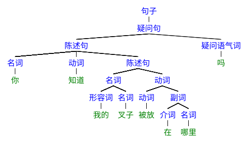
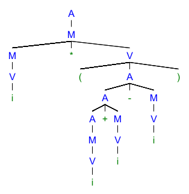
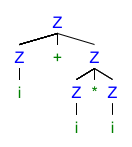
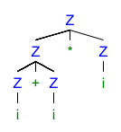

一、前言
一个人进行推理时…… 这种过程如果是用语词进行的，他便是在心中把各部分的名词序列连成一个整体的名词或从整体及一个部分的名词求得另一个部分的名词。
—— 托马斯·霍布斯《利维坦》第一部分 论人类 第五章 论推理与学术
当霍布斯将他的机械唯物主义运用于人的思想时，语言便成为了人脑的齿轮。人的精神当然并非机械，可这种认识却也敏锐地察觉到了语言的一些本质，那就是语言是一些规则，通过这些规则的拼凑，我们得以表述我们的思想。如今，这种规则我们称之为文法。
语言学家的一部分工作是从现有的自然语言中总结文法，让语言成为机械。但是这并不是我们的重点，我们所要探索的是一个更加年轻的领域，这个领域的研究从机械出发，却要去创造千变万化的语言，让机械成为语言。
二、自然语言的文法：一个例子
但是要开始我们的旅程，还需要从自然语言开始。当我们听别人说话，或者阅读一段句子的时候，我们究竟在理解什么？比如说，现在有这样一句话，你知道我的叉子被放在哪里吗。让我们尝试理解这个句子。
这部分默认各位已有了对词性的基本认识，至少知道名词、形容词、动词、副词等等的大致含义。否则的话，这部分内容实难描述。
另外注意对于自然语言的相关表述可能并不完全符合人的认知的真实情况，这一部分只是为了方便理解。
首先需要明确一点，抛开我们所有的经验来看，语言就是符号的序列。也就是说语言是在时间上存在先后顺序的许多符号。这意味着我们的理解过程必定是从前到后的。对于上述句子来说，我们先读到 你，之后才能读到 知，再之后 道、我 等等。
另外，在这样不断读到一个个符号的时候，我们也并非单纯的按照字母或音节分别认识，而是首先明确哪些音节或符号共同组成相同含义，并将其作为一个单词来识别。在自然语言处理领域，这称为“分词”；而对于编译来说，这称为“词法分析”。
我们理解这个句子的过程可能是这样的：
- 读到
你，这指代一个事物，为名词 - 读到
知道，这指代一个行为，为动词 - 读到
我的，这描述了事物的属性，为形容词 - 读到
叉子，这指代了另一个事物，为名词 - 形容词
我的和名词叉子组成我的叉子，也是个名词 - 读到
被放，这是动词。 - 读到
在，这表达了一个关系，为介词 - 读到
哪里，这是名词 - 介词
在和 名词哪里组成在哪里，用于描述行为，为副词 - 动词
被放和副词在哪里组成被放在哪里，也是个动词。 - 名词
我的叉子和动词被放在哪里组成我的叉子被放在哪里，用于陈述一个事实，称为陈述句 - 名词
你、动词知道和句子我的叉子被放在哪里组成了你知道我的叉子被放在哪里，是另一个陈述句。 - 读到
吗，这是一个疑问语气词，用于表达疑问。 - 句子
你知道我的叉子被放在哪里和疑问语气词吗组成你知道我的叉子被放在哪里吗，表达对被陈述的事情真实性的询问，是疑问句。 - 读完了所有的单词，最后得到的疑问句就是整个句子。
在上述过程中，我们不断将小的句子成分归纳为大的句子成分，在这样归纳的过程中，我们将句子中的每个单词相互关联起来，最终理解句子表达的含义。从中我们可以知道这是一个疑问，想要得到的回答是“你”与“我的叉子被放”两个事物间是否存在“知道”的关系等等。（这样说话好别扭。）
自我们出生，我们就在特定的语言环境下学习人与人的交流方式。耳濡目染，我们的大脑就形成了对语言结构的识别能力。这使我们知道一些单词表示事物，一些单词表示行为、一些单词用于形容、一些单词用于表示关系…… 我们也明白了名词加上形容词的修饰变成了新的名词，名词加动词加上另一个名词或者句子会构成新的句子。我们在平时交流时或许并不在意，但是这样的匹配能力却天生存在于我们大脑的特定脑区中。匹配所使用的规则，我们则称其为文法。
三、从自然语言转变
（1）归约的视角
在上一节中我们使用一个自然语言的例句描述了理解句子的过程，并从中引出了文法的概念。现在我们可以整理一下在理解这个句子的过程中用到的文法：
- 形容词加名词还是名词
- 介词加名词组成副词
- 动词加副词还是动词
- 名词加动词组成陈述句
- 名词加动词加名词也组成陈述句
- 陈述句加疑问语气词组成疑问句
- 陈述句和疑问句都是句子
- “你”、“叉子”、“哪里” 是名词
- “知道”、“被放” 是动词
- “我的” 是形容词
- “在” 是介词
- “吗” 是疑问语气词
我们可以发现，我们所有的文法描述都分为两个部分，前一部分是后一部分的组成。前一部分可以有多个成分，后一部分只能有一个。如 “名词加动词组成陈述句”，前一部分包括 “名词” 和 “动词”，而后一部分只包括 “陈述句”。
存在着这样的关系，意味着我们能够将文法组织成树的形式。对于一条文法规则，以整体作为父节点，以各组成成分为子节点。这样我们就得到了一个根为 “句子”、叶节点为各单词的树。我们称这样的树为文法树或语法树。对于我们的例句，其文法树如下所示：

图是在这里画的。
如此一来，我们对句子的理解过程就抽象为从叶节点开始的文法树构建过程：在最开始，我们将每个单词都作为一棵只有一个节点的树；之后在每一步中，我们都选择一些相邻的树，用一个新的父节点作为这些树新的根；不断重复这一过程，最终我们就得到了一棵文法树。这一过程称为归约（Reduction）。
（2）推导的视角
上面的叙述中我们都采用了归约的视角，这是我们理解自然语言的过程。但是如果我们选择从语言生成的过程出发，这就带来了推导的视角。
假定现在我们想要言说某些概念，表达的依旧是 “你知道我的叉子被放在哪里吗” 的含义。那么我们会如何去做呢？我们的思维过程可能是这样的：首先，我想要询问，因此需要一个疑问句，疑问句由陈述句加上疑问语气词组成；其中陈述句希望表达 “你知道我的叉子被放在哪里” 的含义……
这样，我们就从说一个句子出发，慢慢构建起了我们所希望说的具体内容。以这个视角，我们会发现文法树并没有发生变化，变化的是我们产生语法树的过程。这一次，我们从只有一个句子作为根节点开始，慢慢通过规则创造了叶节点，直到所有的叶节点变为我们实际可以言说的单词。这一过程就称为推导（Derivation）。
四、语言的形式化
（1）文法的定义
我们终于从自然语言中抽象出文法树的概念。现在是时候抛弃我们此前使用的不准确的表述，以形式化的方式定义文法了。
但在此之前需要补充一些表示方法：
- 我们将符号定义为句子的基本单位，这里所谓的符号是抽象的符号，可以是 a、abandon 或 “阿”，并未只能是单个字母。不同的符号互不相等，这些符号组成的非空有限集称为字母表，记作 $\sum$。
- 符号串是符号所组成的有穷序列。特别的对于长度为零的符号串，记为 $\epsilon$。
- 符号串和符号串间可以进行拼接操作，若将符号看作长度为 1 的符号串，则符号也可以进行拼接操作。假设有符号或符号串 $x$ 和 $y$，则拼接操作记为 $xy$。
- 假设现在有符号串集 $A$ 和 $B$，定义符号串集合的乘积操作 $AB = \{xy| x \in A, y \in B\}$，其中 $xy$ 表示符号串拼接。
- 对符号串集合 $A$，定义幂运算 $A^n = A^{n-1}A, A^0 = \{\epsilon\}$。
- 对符号串集合 $A$，定义正闭包 $A^+ = \bigcup_{i = 1}^{\infty}A^i$；以及闭包 $A^* = A^0 \cup A^+$。
文法（Grammar）可以表示为这样一个四元组（可以简记为 $G[Z]$）
$$ G = (V_n, V_t, P, Z) $$- $V_n$ 表示非终结符号（Non-terminal Symbol）集。即在分析句子的过程中出现的中间符号，如前一节的“名词”、“动词”。
- $V_t$ 表示终结符号（Terminal Symbol）集。即实际组成句子的符号，如前一节的“你”、“知道”。
- $P$ 表示推导规则（Production Rules）集合，同样也是文法树中父子节点间的约束条件。一条规则可以表示为有序对 $(U, x)$，其中 $$ U \in V_n, x \in V^*, |U| = 1, |x| \ge 0 $$
- $Z$ 表示开始符号（推导视角），或称识别符号（归约视角）。即文法树的根节点。$Z \in V_n$。
对于规则，为了表示有序对中两方角色的不同，常使用下面的两种表示方法
$$ \begin{align*} U ::= x \\ U \rightarrow x \end{align*} $$第二种方式称为文法的 BNF 表示（Backus-Naur Form）。对于有相同左部的规则，可以用
$$ \begin{align*} Z & \rightarrow A | Ac \\ A & \rightarrow Aa | a \end{align*} $$|分隔。如下是一个例子另外还有扩展的 BNF 表示，使用
$$ \begin{align*} Z & \rightarrow A [c] \\ A & \rightarrow a \{a\} \end{align*} $${}表示零或多次重复，[]表示出现或不出现。当然这种表示得到的文法树和原始表示的结果并不相同。上面的 BNF 表示由 EBNF 表示如下所示
（2）推导与归约
推导与归约的形式化
推导的过程，简单来说，就是从开始符号开始，不断使用推导规则，将规则左侧的非终结符替换为右侧的符号串。当然我们也可以形式化地定义推导：
对于文法 $G$，若存在 $v \in V^+, w \in V^*$，且 $v = xUy, w = xuy$，其中 $x, y \in V^*; U \in V_n; u \in V^*$，若存在 $U ::= u \in P$，则 $v$ 可推导出 $w$，记为 $v \Rightarrow w$。
那么对于归约呢？归约是推导的逆运算，所以若有 $v \Rightarrow w$，则 $w$ 可归约为 $v$，记为 $w \Leftarrow v$。
语言集的定义
语言是满足文法的所有可能句子的集合。通过推导，我们可以定义一个文法所能表达的语言。
在此之前我们定义，若 $v$ 经过一步或多步推导可以推出 $w$，则记为 $v \stackrel{+}\Rightarrow w$；同时定义若 $v = w$ 或 $v \stackrel{+}\Rightarrow w$ 记为 $v \stackrel{*}\Rightarrow w$。
我们将从开始符号经过一系列推导得到的中间过程称为句型。因此 $x$ 是句型当且仅当 $Z \stackrel{*}\Rightarrow x \land x \in V^*$。
如果从开始符号开始，经过一系列推导得到的句型的所有符号都为终结符，则称其为句子。句子是推导的最终结果、是归约的初始状态。因此 $x$ 是句子当且仅当 $Z \stackrel{+}\Rightarrow x \land x \in V^{*}_t$。
而语言就是所有从开始符号经由规则进行推导所产生的所有可能句子的集合。对于文法 $G[Z]$，记语言为 $L(G[Z])$，则有
$$ L(G[Z]) = \{x| x \in V_t^*, Z \stackrel{+}\Rightarrow x\} $$很明显，语言与符号集有着这样的关系： $L(G[Z]) \subset (V_n \cup V_t)^*$。
对于编译程序来说，所要做的工作就是对于文法 $G[Z]$，对任意的符号串 $x \in (V_n \cup V_t)^*$，判断是否有 $x \in L(G[Z])$。
规范归约与最左推导
在形式化定义推导与归约之后，我们重新分析一下在第二节中所描述的句子的理解过程。我们拥有一个句型，即由终结符和非终结符构成的序列。我们要进行归约，所做的就是识别句型中符合规则的那其中一部分，将这一部分替换成规则左侧的非终结符，直到句型只剩一个开始符号。其中对于可以经过一系列规则归约成单一非终结符的句型中的一部分，我们称其为短语。
形式化地说，对文法 $G[Z], w = xuy \in V^+$ 为句型，若 $Z \stackrel{*}\Rightarrow xUy$ 且 $U \stackrel{+}\Rightarrow u$，则 $u$ 是句型 $w$ 相对于 $U$ 的短语。
特别的，对于句型中可以经过一条规则归约的部分，我们称其为简单短语。形式化表示为若 $Z \stackrel{*}\Rightarrow xUy$ 且 $U \Rightarrow u$，则 $u$ 是句型 $w$ 相对于 $U$ 的简单短语。
从文法树的视角来看，当前句型的短语集即文法树的所有可能子树的叶节点序列所组成的集合；简单短语集即文法树的所有高度为 2 的子树的叶节点序列所组合的集合。
因此对于句子的理解过程，我们可以重新表述为：对于句型，不断按照规则归约其简单短语，直到归约成文法的开始符号为止。
如果我们再进一步，考虑在理解句子时需要依次读入单词，而无法在同时看到整个句子，这时我们就会发现，在理解的时候我们总是会在已读入部分出现第一个可归约的简单短语的时候进行归约。还以 你知道我的叉子被放在哪里吗 为例，在读到 你知道我的 的时候，我们还不能确定句子的任何结构成分，只有读到 你知道我的叉子 的时候，我们才能第一次进行归约，得到 我的叉子 这个名词。
这意味着对于任意句型，我们所归约的都是其文法树中处于最左侧的简单短语。由于位于此处的简单短语有其特殊性，所以我们为其额外命名。定义句型的最左简单短语为该句型的句柄（Handle）。
说起来 “句柄” 这个翻译的滥用实在是中文计算机领域的一大 “丑闻”。将 Handle 翻译成句柄最早就出现在编译领域中。此处 Handle 确实是句型中的成分，而 Handle 也确实有把手的意思，所以 “句柄” 这个翻译并非没有道理。但是如果 Handle 指代的是用于操纵某些资源的标识，如文件描述符，那么所谓 “句柄” 就完全没有道理了，翻译成 “把手”、“柄” 乃至 “抓手”、“编号” 都比 “句柄” 好。“句柄” 完全不知所谓。
如果归约过程每次都对句柄进行归约，则这样的归约过程称为规范归约，也称为最左归约（因为每次归约最左简单短语）。而因为归约和推导互为逆过程，所以存在作为规范归约逆过程的推导过程，称其为规范推导，也称为最右推导（最早归约最左简单短语意味着最晚推导最左侧的非终结符；即在推导该非终结符前，其右侧的非终结符都已被推导；也即每次推导最右非终结符）。
存在最右推导就存在最左推导，我们将最左推导定义为每次推导最左非终结符。这时我们就可以发现，最左推导实际上反映了语言的生成过程。因为采用最左推导时，在一个终结符被推导出之后，其左侧一定不存在非终结符。这保证了我们可以按顺序言说推导得到的句子。
五、用代码重述文法理论
（1）文法的定义
数学当然很准确，但是总归不够直观。接下来我就将用代码重述文法理论。为了避免不必要的细节，这里使用 Python。
所谓文法，是一个四元组，包括终结符集、非终结符集、规则集合以及开始符号。据此我们定义文法类 Grammar。
class Grammar:
def __init__(
self,
terminal: set[str],
non_terminal: set[str],
rules: list[tuple[str, list[str]]],
start: str,
) -> None:
pass
注意代码中 rules 类型是一个二元组列表，其中二元组第一个元素为 str，第二个元素为 list[str]，分别表示规则左侧的单一非终结符和规则右侧的符号序列。
文法需要满足如下的约束条件：终结符集和非终结符集不相交，且开始符号属于非终结符集合。
class Grammar:
def __init__(
self,
# omit...
) -> None:
if len(terminal & non_terminal) != 0: # intersect
raise Exception("Terminal and non-terminal sets have an intersection")
if start not in non_terminal:
raise Exception("The start symbol is not in the set of non-terminals")
为了更加结构化地表示 “符号” 的概念，我们定义符号类 Symbol。只包含一个属性 __name 方便输出为字符串。
class Symbol:
def __init__(self, name: str) -> None:
self.__name = name
def __repr__(self) -> str:
return self.__name
我们在文法类中使用新定义的 Symbol 类创建终结符、非终结符集合以及开始符号
class Grammar:
def __init__(
self,
# omit...
) -> None:
# omit...
self.__terminal_set = {
name: Symbol(name) for name in terminal
}
self.__non_terminal_set = {
name: Symbol(name) for name in non_terminal
}
self.__start = self.__non_terminal_set[start]
之后我们同样创建规则类 Rule。使用 left 和 right 属性定义规则的左右两侧。左侧为单一的 Symbol，而右侧为 Symbol 列表。与符号类类似，我们也定义了字符串转换函数 __repr__。
class Rule:
def __init__(self, left: Symbol, right: list[Symbol]) -> None:
self.left = left
self.right = right
def __repr__(self) -> str:
return f"{self.left}::={''.join([str(symbol) for symbol in self.right])}"
随后我们在 Grammar 类中初始化规则列表。根据传入的规则二元组找到对应的左侧符号和右侧符号序列，创建新的 Rule 对象，添加到成员 __rules 的列表中。
class Grammar:
def __init__(
self,
# omit...
) -> None:
# omit...
self.__rules = list[Rule]()
for rule_left, rule_rights in rules:
rule_left_symbol = self.__find_rule_left_symbol(non_terminal, rule_left)
rule_right_symbols = self.__find_rule_right_symbols(
terminal, non_terminal, rule_rights
)
self.__rules.append(Rule(rule_left_symbol, rule_right_symbols))
这样我们就将文法用代码表示出来了。接下来还要定义符号序列类 Sequence，并使用该类实现推导和归约功能。
（2）推导和归约的实现
我们需要能够表示文法树，因此定义一个简单的 TreeNode 类。以符号作为成员，因为在文法树中同一个符号可能出现在多个节点中。
class TreeNode:
def __init__(self, symbol: Symbol) -> None:
self.symbol = symbol
self.children = list[TreeNode]()
随后定义 Sequence 类，传入文法 Grammar 以及符号序列作为构造函数的参数。
class Sequence:
def __init__(self, grammar: Grammar, symbols: list[Symbol]) -> None:
pass
同时在 Grammar 类中创建两个工厂函数，分别为归约和推导的初始情况。
class Grammar:
# omit...
def create_empty_sequence(self):
return Sequence(self, [])
def create_sentence_from_start(self):
return Sequence(self, [self.__start])
Sequence 类的具体初始化如下。我们使用 __curr_nodes 保存当前实际的符号序列对应的节点。使用 __root 保存文法树的根节点，以便完成推导或归约后导出文法树。
class Sequence:
def __init__(self, grammar: Grammar, symbols: list[Symbol]) -> None:
self.__grammar = grammar
self.__curr_nodes = list[TreeNode]()
for symbol in symbols:
self.__curr_nodes.append(TreeNode(symbol))
self.__root: TreeNode | None = (
self.__curr_nodes[0] if len(self.__curr_nodes) == 1 else None
)
对于推导，实际上就是选定位置的非终结符应用规则，将其替换为规则的右侧部分。我们在 derive 函数中实现这一流程。
class Sequence:
# omit...
def derive(self, pos: int, rule: Rule):
father_node = self.__curr_nodes[pos]
if father_node.symbol != rule.left:
raise Exception(
f"Rule mismatch, expect {rule.left}, got {father_node.symbol}"
)
child_nodes = [TreeNode(symbol) for symbol in rule.right]
father_node.children = child_nodes
self.__curr_nodes.remove(father_node)
for no, child_node in enumerate(child_nodes):
self.__curr_nodes.insert(pos + no, child_node)
derive 函数传入应用规则的位置 pos 以及应用的规则 rule。找到对应位置的符号，判断其是否与规则的左侧匹配，如果匹配将其从序列中移出。并插入规则右侧的符号序列。对于文法树，在此过程中新插入的节点成为被移出的节点的子节点。
而归约则为推导的逆过程。使用 reduce 函数实现。这里传入的 pos 是要归约的符号序列中的第一个符号所在的位置。在最开始需要检查符号序列是否与规则的右侧匹配。如果匹配则将该序列移出，并插入规则左侧的符号序列，对于文法树，在此过程中新插入的节点成为被移除的节点的父节点。
归约的实现中与推导唯一不同的地方在于归约可能产生出文法树的根节点。因此当归约到整个序列只有一个符号时，需要将其设定为根。
class Sequence:
# omit...
def reduce(self, pos: int, rule: Rule):
child_nodes = self.__curr_nodes[pos : pos + len(rule.right)]
for child_node, expect_symbol in zip(child_nodes, rule.right):
if child_node.symbol != expect_symbol:
raise Exception(
f"Rule mismatch, expect {expect_symbol}, got {child_node.symbol}"
)
father_node = TreeNode(rule.left)
father_node.children = child_nodes
for child_node in child_nodes:
self.__curr_nodes.remove(child_node)
self.__curr_nodes.insert(pos, father_node)
if len(self.__curr_nodes) == 1:
self.__root = self.__curr_nodes[0]
对于最左/最右推导，我们也可以在此处实现。这样一来就不再需要 pos 参数了。只需要传入 rule 作为参数。当然，此处为了便于编写，我们额外使用了一个 restriction: Literal["left-most", "right-most"] 参数区别最左或最右。
对于最左/最右推导，我们使用 restricted_derive 函数实现。其中 __get_non_terminal_pos_at 函数用于找到当前符号序列中最左或最右的非终结符。
class Sequence:
# omit...
def restricted_derive(
self,
restriction: Literal["left-most", "right-most"],
rule: Rule,
):
pos = self.__get_non_terminal_pos_at(restriction)
if pos == -1:
raise Exception(
f"No non-terminal found for '{restriction}' in the current sentence"
)
self.derive(pos, rule)
对于规范归约，此处较难实现，因为简单短语的识别并不容易，需要在之后的章节讲解。因此这里我们使用两个函数 reduce_tail 和 append 两个函数模拟读取符号和对句柄进行归约的过程。（在读入符号的过程中，如果识别到句柄，则句柄必定位于已有句型的最右侧，所以要归约 “末尾部分“。）
class Sequence:
# omit...
def reduce_tail(
self,
rule: Rule,
):
pos = len(self.__curr_nodes) - len(rule.right)
self.reduce(pos, rule)
def append(self, symbol: Symbol):
self.__curr_nodes.append(TreeNode(symbol))
（3）代码实验
现在我们可以测试一下代码。为了与之后的编译相衔接，这里就使用一个简单的四则运算的文法 $G[A]$。
$$ \begin{align*} A &\rightarrow M | A + M | A - M \\ M &\rightarrow V | M * V | M / V \\ V &\rightarrow i | ( A ) \end{align*} $$首先定义文法：
G = Grammar(
terminal={"+", "-", "*", "/", "i", "(", ")"},
non_terminal={"A", "M", "V"},
rules=[
("A", ["M"]),
("A", ["A", "+", "M"]),
("A", ["A", "-", "M"]),
("M", ["V"]),
("M", ["M", "*", "V"]),
("M", ["M", "/", "V"]),
("V", ["i"]),
("V", ["(", "A", ")"]),
],
start="A",
)
[print(no, rule) for no, rule in enumerate(G.get_rules())]
# 0 A::=M
# 1 A::=A+M
# 2 A::=A-M
# 3 M::=V
# 4 M::=M*V
# 5 M::=M/V
# 6 V::=i
# 7 V::=(A)
之后我们尝试对句子 i*(i+i-i) 分别进行归约和推导。
sentence = "i*(i+i-i)"
sentence = [G.get_symbol(char) for char in sentence]
print(sentence)
# [i, +, i, -, i, *, i, *, (, i, -, i, )]
当然，在开始之前，让我们先展示一下这个句子的文法树

就算是这么简单的文法和句子，得到的文法树也很复杂，完全不是手工能够处理的。所以在之后我们会了解不同的分析方法，通过机械的手段解析这样的文法树。但是现在，我们还是手工来一遍吧。
使用代码进行归约
首先进行归约。我们不断读入句子中的符号，并使用规范归约构建文法树。在此之前我们定义 read_next 和 reduce_use 两个函数分别表示 “读入符号” 和 “使用第几条规则进行归约” 两个操作。
siter = iter(sentence)
seq1 = G.create_empty_sequence()
read_next = lambda: seq1.append(next(siter))
reduce_use = lambda no: seq1.reduce_tail(G.get_rule(no))
之后的操作简直地狱一般繁琐，幸好之后不用再手写了。
read_next() # i
reduce_use(6) # V::=i
reduce_use(3) # M::=V
read_next() # *
read_next() # (
read_next() # i
reduce_use(6) # V::=i
reduce_use(3) # M::=V
reduce_use(0) # A::=M
read_next() # +
read_next() # i
reduce_use(6) # V::=i
reduce_use(3) # M::=V
reduce_use(1) # A::=A+M
read_next() # -
read_next() # i
reduce_use(6) # V::=i
reduce_use(3) # M::=V
reduce_use(2) # A::=A-M
read_next() # )
reduce_use(7) # V::=(A)
reduce_use(4) # M::=M*V
reduce_use(0) # A::=M
最终我们得到文法树。这里我定义了一个函数 walk_tree 用之前提到过的网站的文法树格式输出文法树。
def walk_tree(tree: TreeNode):
return (
"["
+ str(tree.symbol)
+ "".join([walk_tree(child) for child in tree.children])
+ "]"
)
tree1 = seq1.get_tree()
print(walk_tree(tree1))
# [A[M[M[V[i]]][*][V[(][A[A[A[M[V[i]]]][+][M[V[i]]]][-][M[V[i]]]][)]]]]
可以试着将结果粘贴到网站上，可以得到和上面图片相同的文法树。
使用代码进行推导
接着我们进行推导操作。这里使用最左推导。和归约时不同，这次只需要进行最左推导即可。
首先定义 derive_use 用于表示 “使用第几条规则进行最左推导”
seq2 = G.create_sentence_from_start()
derive_use = lambda no: seq2.restricted_derive("left-most", G.get_rule(no))
之后只需要不断进行最左推导即可
derive_use(0) # A::=M
derive_use(4) # M::=M*V
derive_use(3) # M::=V
derive_use(6) # V::=i
derive_use(7) # V::=(A)
derive_use(2) # A::=A-M
derive_use(1) # A::=A+M
derive_use(0) # A::=M
derive_use(3) # M::=V
derive_use(6) # V::=i
derive_use(3) # M::=V
derive_use(6) # V::=i
derive_use(3) # M::=V
derive_use(6) # V::=i
最终得到的文法树和采用规范归约时相同。
tree2 = seq2.get_tree()
print(walk_tree(tree2))
# [A[M[M[V[i]]][*][V[(][A[A[A[M[V[i]]]][+][M[V[i]]]][-][M[V[i]]]][)]]]]
因为规范归约和最右推导是逆过程，所以可以将上一小节中归约时所用规则的顺序反过来，进行最右推导，同样能得出相同的文法树
seq3 = G.create_sentence_from_start() derive_use2 = lambda no: seq3.restricted_derive("right-most", G.get_rule(no)) derive_use2(0) derive_use2(4) derive_use2(7) derive_use2(2) derive_use2(3) derive_use2(6) derive_use2(1) derive_use2(3) derive_use2(6) derive_use2(0) derive_use2(3) derive_use2(6) derive_use2(3) derive_use2(6) tree3 = seq3.get_tree() print(walk_tree(tree3)) # [A[M[M[V[i]]][*][V[(][A[A[A[M[V[i]]]][+][M[V[i]]]][-][M[V[i]]]][)]]]]
（4）实验后的补充
二义性
在上面代码实验的过程中我们使用了两种不同的推导方法，他们都能推出相同的结果。这是否意味着推导的顺序与文法树的结构无关呢？或者说，对于一个文法和此文法的一个句子，其文法树是否就惟一确定了呢？
结果是否定的。我们可以给出一个很经典的例子。现在有文法 $G[Z]$：
$$ \begin{align*} Z \rightarrow Z + Z | Z * Z | i \end{align*} $$那么对于该文法上的句子 i+i*i，其文法树是什么呢？如果我们按照常理，则先使用 $Z \rightarrow Z + Z$，此时得到的文法树和如下

可如果我们先使用 $Z \rightarrow Z * Z$ 进行推导，则文法树又变成了如下的形式

这说明对于一个文法和此文法的一个句子，其文法树并非唯一确定。不过幸好的是，至少对于一部分文法，可以确定惟一的文法树。我们定义若对于一个文法的某一句子（或句型）存在两棵不同的文法树，则该文法是二义性文法；否则是无二义性文法。
另一个不幸的地方在于，文法的二义性是不可判定的。因此对这问题，我们并没有更多可深入的地方。
实用限制
我们举例的文法中有这样的规则 $A \rightarrow A + M$。此规则中，非终结符 $A$ 所推出的符号序列中包含了其本身。这意味着我们可以对 $A$ 所推出的序列不断地应用 $A \rightarrow A + M$。这样的规则我们称为递归规则。
递归性是文法的重要特性。这一特性使得用有穷文法表述无穷语言成为可能。
正如函数中的递归，递归规则也要有终止条件。否则会不断推导下去，无法终止。所以我们在规则中增加了 $A \rightarrow M$，从而终止递归。
如果一个文法的规则中，存在递归规则，但没有“递归出口”，则这条规则一旦使用就不能退出。虽然在文法的形式定义中并不排除这样的规则，但我们的文法中不应存在这样的规则。这就是文法的实用限制。
在这里要介绍几个概念：
- 有害规则：在文法中，形如 $U ::= U$ 的规则
- 多余规则：其中包括
- 不可达：规则的左部非终结符不出现在任何句型中
- 不活动：一旦使用了该规则，将推不出任何终结符号串。
如果文法中出现了有害规则或多余规则，则该文法不具有实用意义。因此对于这样的文法，我们需要去除其中的有害规则和多余规则，这一过程称为压缩。若某文法中无有害规则或多余规则，则称该文法是压缩过的。
虽然我们都说要进行要进行文法压缩，可网上关于文法压缩的算法的资料还是比较少的。因此这里就详细说明一下文法压缩的方法。
对于文法 $G(V_n, V_t, P, S)$：
-
算法 1（找到所有可达的规则 $P'$）：
- 将文法 $G$ 的开始符号 $S$ 置于集合 $V_n'$ 中；
- 对于 $G$ 中任何形如 $A \rightarrow \alpha_1 | \alpha_2 | ... | \alpha_m$ 的规则，若 $A \in V_n'$，则将符号串中的全部非终结符置于 $V_n'$ 中。而将其中的全部终结符号置于 $V_t'$ 中；
- 重复步骤 2，直到 $V_n'$ 和 $V_t'$ 都不再增大为止；
- 将 $P$ 中左右部仅含 $V_n' \cup V_t'$ 的所有规则置于 $P'$。
-
算法 2（找到所有活动的规则 $P'$）：
- 对于 $P$ 中每一条规则 $A \rightarrow \delta$，若 $\delta \in V_t^*$，则将 $A$ 置于 $V_n'$ 中；
- 对于 $P$ 中每一条规则 $A \rightarrow X_1X_2...X_m$，若每个 $X_i$ 都属于 $V_t$ 或 $V_n'$，则将 $A$ 置于 $V_n'$ 中；
- 重复步骤 2, 直到 $V_n'$ 不再增大为止；
- 对于 $P$ 中的每一产生式 $B \rightarrow Y_1Y_2...Y_n$，若 $B$ 及每一个 $Y_i$ 都属于 $V_n' \cup V_t$，则将此产生式 $B \rightarrow Y_1Y_2...Y_n$ 置于 $P'$。
-
文法压缩算法：
- 去除文法中所有形如 $U ::= U$ 的规则；
- 执行算法 2，令新的规则集 $P := P'$；
- 执行算法 1，令新的规则集 $P := P'$；
- 此时得到的即为被压缩后的文法。
需要注意两个算法执行的先后顺序不可颠倒。
因为我们在设计文法的时候必然已经将文法压缩过了，所有这里就不再编写文法压缩算法的具体代码了。
六、乔姆斯基范式
在最后，我们终于可以为文法理论部分做一个总结。在这篇文章中所写的内容，大多来源于乔姆斯基（Avram Noam Chomsky）20世纪50年代提出的生成语法理论。他的理论源自语言学的研究，却实现了语言学从人文科学到自然科学的转向。恰恰也是在这个时间，编译理论开始发展。两门看似不相关的学科走到了一起。因此这里作为一个补充，同时也为了衔接后面的内容，介绍一下乔姆斯基范式的内容。
和前面所定义的一样，乔姆斯基将所有文法都定义为四元组 $G = (V_n. V_t, P, Z)$。
而根据对规则集 $P$ 所施加的限制的不同，可以将语言分为四型：
- 0 型文法：$P$ 中任意规则形如 $u ::=v$，其中 $u \in V^+, v \in V^*, V = V_n \cup V_t$。0 型文法也称为短语结构文法。规则的左部和右部都可以是符号串，一个短语可以产生另一个短语。
- 1 型文法：$P$ 中任意规则形如 $xUy ::= xuy$，其中 $U \in V_n; x,y,u \in V^*$。1 型文法也称为上下文敏感或上下文有关。这意味着只有在 $x$ 和 $y$ 这样的上下文中才能把 $U$ 改写为 $u$。
- 2 型文法：$P$ 中任意规则形如 $U::=u$，其中 $U \in V_n, u \in V^*$。2 型文法也称为上下文无关文法。意味着在任何情况下都可以将 $U$ 改写为 $u$，而不需要考虑上下文。
- 3 型文法：$P$ 中任意规则形如 $U::=t$ 或 $U::=Wt$ 其中 $U,W \in V_n; t \in V_t$（左线性）或者 $P$ 中任意规则形如 $U::=t$ 或 $U::=tW$ 其中 $U,W \in V_n; t \in V_t$（右线性）。3 型文法也称正则文法。意味着终结符只能在规则的一侧生成，要么都在左侧、要么都在右侧。
根据定义可以得知，四型文法从 0 到 3，对规则的约束条件越来越强。如果设 $P_{(i)}$ 表示 $i$ 型文法的规则集，则有 $P_{(3)} \sub P_{(2)} \sub P_{(1)} \sub P_{(0)}$。
我们之前对文法的定义属于 2 型文法和 3 型文法，也只有 2 和 3 型文法的推导过程可以产生文法树的结构。这也是我们在未来真正需要用到的两种文法。其中 3 型文法，或正则文法，在编译过程的词法分析部分使用，主要用于定义字母如何组成不同单词；而 2 型文法，或上下文无关文法，则在编译过程的语法分析部分使用，用于将顺序的单词序列解析为文法树。
终于写完了~